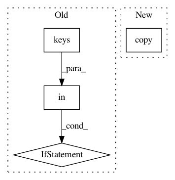

75ec13dea174377dce7da44610cd940f81b2a327,anvio/migrations/config/v0_to_v1.py,,migrate,#Any#,19
Before Change
// if the param belongs to special params then we skip it
continue
elif type(default_config[param]) == dict:
if "run" in default_config[param].keys() and not w.A(["param", "run"], config):
// if this is a rule that has a "run" parameter then
// if run is not set to true in the config then skip this rule
continue
else:
// otherwise update config rule parameters
new_config[param] = default_config[param].update(config.get(param,""))
else:
// if it"s not a dict then it"s a general parameter
// update the general parameter
new_config[param] = config.get(param, default_config[param])
After Change
config = workflow_object.config
default_config = workflow_object.default_config
new_config = config.copy()
new_config["config_version"] = "1"
//// Deal with special cases
special_params = ["fasta_txt", "references_for_removal", "references_mode"]
In pattern: SUPERPATTERN
Frequency: 3
Non-data size: 4
Instances
Project Name: merenlab/anvio
Commit Name: 75ec13dea174377dce7da44610cd940f81b2a327
Time: 2019-12-13
Author: alon.shaiber@gmail.com
File Name: anvio/migrations/config/v0_to_v1.py
Class Name:
Method Name: migrate
Project Name: scikit-multiflow/scikit-multiflow
Commit Name: 0685dcd247e1c9b696c0d865f0851f68d1f7b66c
Time: 2018-06-18
Author: jacob.montiel@gmail.com
File Name: src/skmultiflow/classification/trees/hoeffding_tree.py
Class Name: HoeffdingTree
Method Name: predict_proba
Project Name: scikit-multiflow/scikit-multiflow
Commit Name: 7301f860743d7b45cd1d885094bf753629b535e8
Time: 2018-06-14
Author: jacob.montiel@gmail.com
File Name: src/skmultiflow/classification/trees/hoeffding_tree.py
Class Name: HoeffdingTree
Method Name: predict_proba